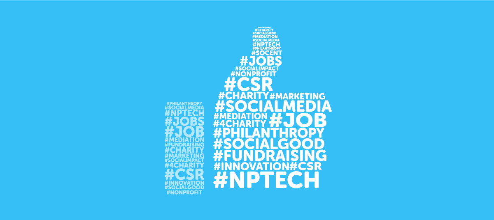
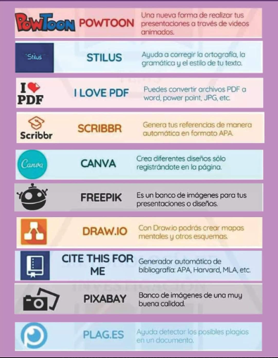

¿Por qué es importante ser cuidadoso con las redes sociales?
Las redes sociales pueden ser un gran aliado de los jovenes a la hora de comunicarse, socializar, buscar información, o simplemente para entretenerse. Así mismo estas redes tienen el potencial de ayudar con las metaas académicas, mejorando habilidades y cometencias en los jovenes como pueden ser: debate, filtración de información, socializar, o habilidades e inteligencia interersonales, entre otras más. Sin embargo hay que ser consiente así mismo de sus riesgos; estos pueden ir desde burlas y ciberbullying, hasta acoso, y en los mas graves casos: secuestros. Esto sumado a toda la negatividad que contiene internet provocan que sean un gran riesgo para el desarrollo de los jovenes y su personalidad.
Consejos a la hora de usar redes sociales
"Los buenos y malos usos se establecen en un continuo en el que, en función del contexto, la edad, los objetivos, las características personales, etc, hacen que el uso sea bueno o malo”.

También debes de cuidar tus horas de sueño, pues el sueño es de lo más beneficioso para una salud prospera, pues es el que te da energía para poder vivir, es el que mantiene en òptimo rendimiento a tu cerebro, el que recupera tu cuerpo, y el que te permite vivir tranquilamente tu diario vivir; entonces no sacrifiques tus valiosas 8 horas de sueño mínimas diarias por estar chateando o viendo vídeos, organiza tu tiempo para hacer eso a lo largo del día, y usa la hora de dormir para dormir responsablemente, pues no dormir lo necesario puede repercutir en tu vida diaria, como lo puede ser tu rendimiento académico y laboral, tal y como lo expresa la investigación de Martin, Wang, Petty, Wang.W & Wilkins(2019) .
Finalmente otra cosa con la que tener cuidado es con estimular tu cerebro diariamente con actividades que te aporten, como jugar ajedrez o jugar juegos de puzzles, para tener una buena salud y fortaleza mental, ya que si tu cerebro no trabaja ni se esfuerza, va a terminar deteriorándose peor, y por ende, va a afectar tu salud a largo plazo, al igual que con tus estudios y desempeño académico.


Procura no subir muchos datos personales importantes o de otros a las redes sociales, como lo pueden ser direcciones, edad, número telefónico, o lugares concurrentes.
Si tienes información valiosa como direcciones, secretos, fotos comprometedoras, tarjetas de crédito o cualquier cosa de valor, procura que esté bien protegida para evitar riesgos de filtración, hackeos, o extorsiones.
Si te llegan a acosar o hacer ciberbullying reportalo, bloquealos, e ignoralos, no dejes que te afecte comentarios de gente que ni siquiera te conocen realmente. Acá puedes denunciar el acoso:https://adenunciar.policia.gov.co/adenunciar/Login.aspx?ReturnUrl=%2fadenunciar%2f
Evita el encuentro presencial de personas desconocidas en internet a no ser que tengas la seguridad de saber con certeza quienes en realidad son.



Consejos academicos a la hora de usar redes sociales
https://vitcord.uptodown.com/android/descargar

Acá vas a poder encontrar algunas cuentas interesantes para que visites:
-Una quìmica para todos(Quìmica) @quimicapau en Tik Tok e Instagram, Academia Osorio en Youtube
@quimicapau NO3- de H2O-ntarte 🤷🏻♂️😅
♬ Monkeys Spinning Monkeys - Kevin MacLeod & Kevin The Monkey
-La profe(Matematicas)@leilavidriales en Tik Tok e Instagram
@leilavidriales Me lo re pidieron este ❤️😍
♬ sonido original - La profe 👩🏻🏫
-Drajackielopez(Medicina)@drjackielopez en Tik Tok e Instagram, Salud en Corto en Youtube
@drajackielopez #ultimahora🚨 ¿fraude en la ciencia? Arriculo: Blots On A Field? #alzheimer #science #nature #Lesné ♬ sonido original - drajackielopez
-Pablolomei(Técnica de estudio)@pablolomeli.memoria en Tik Tok e Instagram, Pablo Lomeli en Youtube
@pablolomeli.memoria Respuesta a @_rodrigo47 La Repetición Espaciada 📈 Cómo Estudiar y recordarlo TODO sin aburrirte. 👉 Compárteme tu caso parq analizarlo. #tecnicasdeestudio #tipsdeestudio #metodosdeestudio #hacksdeestudio #aprendeentiktok #estudiantes #universidad #repeticionespaciada #aprendeaestudiaryaorganizarte ♬ sonido original - Pablo Lomeli
-La hiperactina(biomediciina)@lahiperactina en TikTok e Instagram, La Hiperactina en Youtube
@lahiperactina Así se ve el SISTEMA LINFÁTICO 👀🤔✨
♬ sonido original - La Hiperactina
-Ingesaurio(ingienerìa y tecnologìa)@ingesaurio en Tik Tok e Instagram, Dimath en YouTube
@ingesaurio La física del sellado al vacío involucra extraer aire de un recipiente para preservar contenido, reduciendo la oxidación, el crecimiento microbiano, y extendiendo la vida útil de los alimentos. #ciencia #física #selladoalvacio #ingeniería @Luuna ♬ Mysterious and sad BGM(1120058) - S and N
-Mari Teran(ecologìa)@marianateran en Tik Tok e Instagram
@marianateranr ❄️🔥En pleno invierno en América del Sur están sufriendo una ola de calor sin precedentes 🌆🥵Países como Uruguay podría verse severamente afectados al estar sufriendo estrés hídrico 🤤💦 desde comienzos del año, literalmente los embalses se quedaron sin agua Si quieres ayudarar y no sabes cómo? Aquí te cuento... Has oído hablar del periodismo climático? 👩🏫🌳esto es lo que nos mantiene informados y lo que nos permite ser más conscientes en nuestras decisiones diarias. Hoy te quiero recomendar la plataforma Earth HQ ♥️Link en mi perfil o aquí mismo 👉🏽 https://earthhq.org/?date=1692612000000&mode=22&headline=170&height=surface&monitor=fires&overlay=pm2.5&animation=wind&utm_source=influencer&utm_medium=paid&utm_campaign=extreme_event4&utm_content=MT Funciona como un tablero que rastrea el estado del planeta y muestra los eventos climáticos extremos que ocurren en todo el mundo en tiempo real #oladecalor #econoticias #EarthHQ #publicidad #aguapotable #cambioclimatico #crisisclimatica #creadoresdelmañana ♬ Spring - Andrea Vanzo
-Aythami(Quìmica)@ponte_bata en Tik Tok, Reacciona explota en Youtube
@ponte_bata Mi compuesto favorito ⚗️🧪 #cienciaentiktok #aprendeentiktok #quimica #curiosidades #experimentos ♬ original sound - Aythami
-Stewart(Matemàticas)@stewart_math en Tik Tok
@stewart_math ¿Los viste en la escuela? #matematicas #aprendeentiktok #escuelatiktok #divulgacioncientifica ♬ Lo-fi hip hop - NAO-K
-Andy Enriquez(Genètica)@andy..enriquez en Tik Tok, @andy.enriquez.i en Instagram, Andy enriquez en Youtube
@andy..enriquez Un poco complicado 😅 #genetica #medicina #ciencia #cienciaentiktok #aprendeentiktok ♬ Sad piano ballad (moist / BGM)(936730) - TrickSTAR MUSIC
-polli.padill(ciencia)@pollipadilla en Tik Tok,Polli Padilla en Youtube
@pollipadilla Cafés y bosques #fypシ #parati #cienciaentiktok #biologia #aprendeentiktok #aprendetiktok #sorprendente #SabiasQue #biology @Reforestamos México A.C. ♬ sonido original - polli.padilla
-Geo chris Torres(Geografìa e historia)@chris_torr9 en Tik Tok, Chris Torres en Youtube
@chris_torr9 Quien ganaría en una guerra entre Colombia y Venezuela? #geopoltiica #Colombia #Venezuela #guerralatinoamérica #colombiavsvenezuela #quientienemejorejercitocolombiavsvenezuela? #Conflictoarmado #VenezuelaColombia #Reservasmilitares #geopoliticadeamerica #geografiadeColombia #Guerraconvencional #ejercitodevenezuela #ejercitodecolombia #aliadosdecolombia #mapasdelmundo ♬ sonido original - Christian Torres - Geo Chris Torres
-La pulla(Politica y factores sociales)@lapullaopinion en Instagram, La Pulla en Youtube
-Eio Moldavsky(Filosòfia)@eiomoldavsky en Tik Tok, Eio Moldavsky en Youtube
@eiomoldavsky Filo en 1 minuto: La muerte - Heidegger. Del trabajo de Barber Soler. #filosofia #muerte ♬ sonido original - Eio Moldavsky
-Cartas de un lector(literatura)@cartasdeunlector en Tik Tok e Instagram, Cartas de un lector en Youtube
@cartasdeunlector Me gusta mucho ver a Medusa vengándose 🙌🏻 Mi ejemplar lo conseguí en @BuscaLibre 😎 #Booktok ♬ sonido original - Cartas de un Lector
-Haroo(historia)Haroo en Youtube
-Spencer(ingles) @spencerconoce en Tik Tok e Instagram
@spencerconoce Modismos que realmente usamos en inglés. #aprenderingles ♬ original sound - Spencer
-Ohlalafrancès(Francès)@ohlalafrances en Tik Tok, @ohlalafrancesconvalentin en Instagram, Ohlalafrancès con Valentin en Youtube
@ohlalafrances Quelques verbes utiles en français. 😇
♬ son original - 🇫🇷Ohlalafrancés
-Cris Morales(DEP)@bycrismorales en Tik Tok e Instagram, Cristian Morales en Youtube
@bycrismorales Si usted no sabe cómo orientarse en su carrera universitaria le voy a dar unos tips para que pueda enfocar su vida universitaria al campo laboral. Tenga presente que estos consejos los puede aplicar en el navegador y todo se basta en buscar información empíricamente . ##testvocacional##carrerauniversitaria##trucouniversitario##vidalaboral##ingenieriasistemas##desarrollodesoftware##tipsacadémicos##tipsuniversitarios ♬ sonido original - Cris Morales
-MrDann(dibujo)@mrdann_ en Tik Tok e Instagram, MrDaannen Youtube
@mrdaann_ 📕✒️ PERSPECTIVA 1.0 ✒️📕 #drawing101 #drawingtips #sketch #sketches #arte #tutorialdedibujo #artedigital #lineart #aprendeadibujarconmigo #artistsoftiktok #artwork_daily #boceto #perspectiva #puntosdefuga #puntodefuga ♬ Epic Inspiration - DM Production
-Legionarios Èlite(vida saludable y entrenamiento de fuerza)@bastianalmaraz en Tik Tok e Instagram, Legionarios Èlite en Youtube
@bastianalmaraz 3 Alimentos Que PUEDEN SUBIR Tu TESTOSTERONA De Forma NATURAL (Consúmelos Cada Día) 🧠🧬 #parati #fyp #motivacion #foryou #viral #Fitness #ejercicio #Gym #testosterona #suplementos #rutina #entrenamiento #pesas #ciencia #nutricion #salud ♬ sonido original - Legionarios Élite